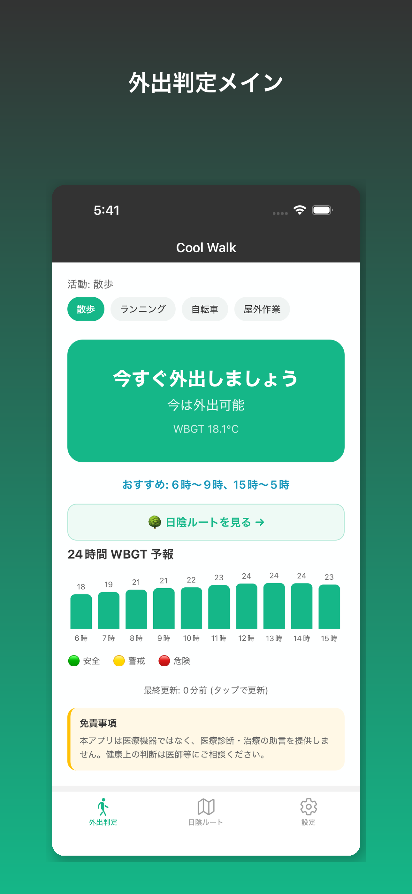
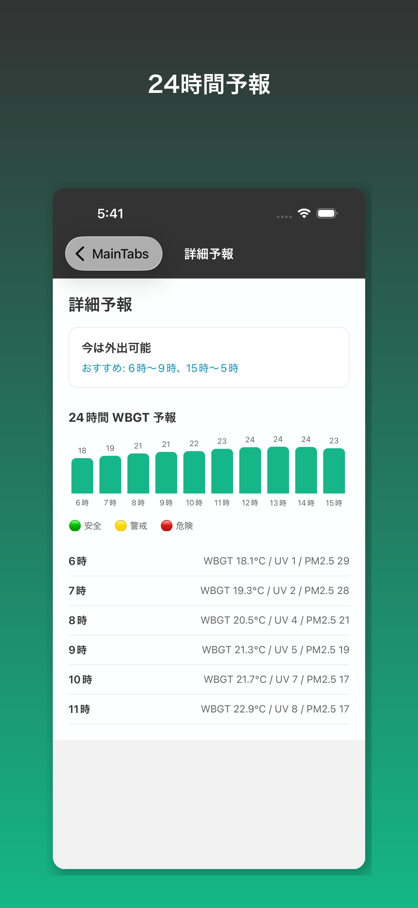
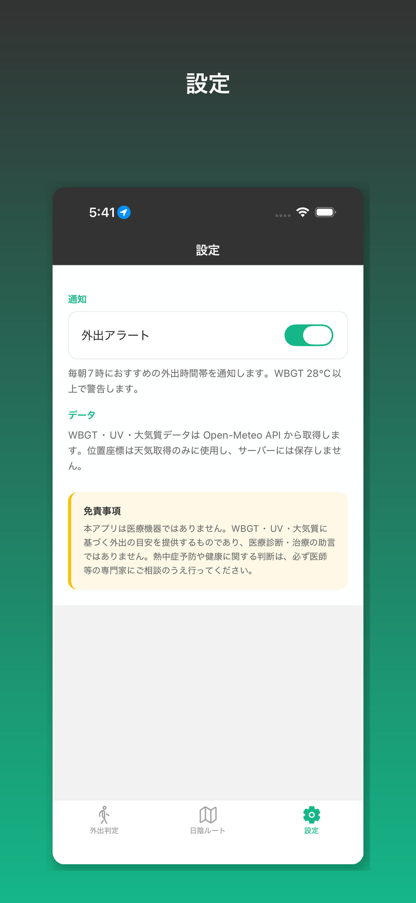

WBGT 31°C
厳重警戒……で、どうすれば？
WBGT 28°C、UV指数8、PM2.5 35——数字が並んでも「今、何分まで外出していい？」はわかりません。Cool Walk は答えを行動で提案します。
2026年の記録的猛暑。知っているだけでは、熱中症は防げません。
WBGT + UV + 大気質を、あなたの活動に合わせて統合。
Open-Meteo から気象・大気質データ
散歩・ラン・自転車・屋外作業
「今10分までOK」「17時以降推奨」
どうしても今外出する必要があるとき、現在地から1.5km圏内の公園・緑地を自動で目的地候補に選び、15分以内の徒歩コースを地図上に表示します。目的地上の入力は不要です。「日陰」は建物の影ではなく、ルート上で公園・緑地の近く（40m以内）を通過する割合を指します。OpenStreetMap + OSRM で算出。
数値を見せない。行動を提案する。
「今すぐ外出しましょう」/「少しお待ちください」を大きく表示。
安全な時間帯を色分け。詳細が必要なときだけ確認。
近くの公園・緑地を自動選定。15分以内・緑地カバー率順の散歩コース。
毎朝7時におすすめ時間帯。WBGT 28°C超で警告。
外出判定・予報・設定まで、ワンタップで行動が決まります。

外出判定メイン
24時間 WBGT 予報
設定・外出アラートスーパーエルニーニョの夏こそ、行動できるアプリを。
iOS · 無料 · アカウント不要 · データは端末内処理
本アプリは医療機器ではありません。健康に関する判断は医師等の専門家にご相談ください。